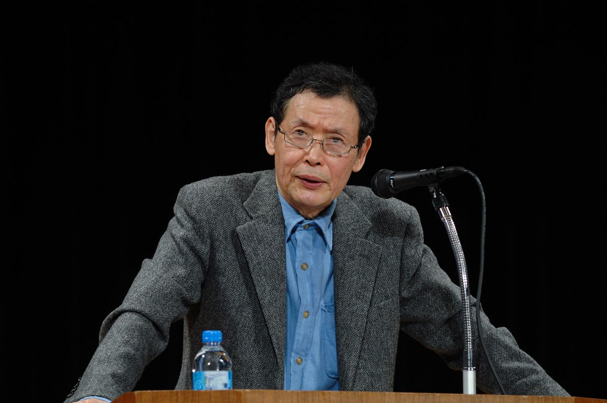
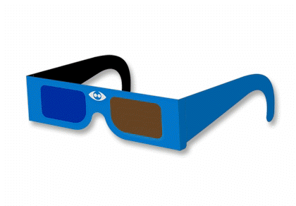

Karatani in 3D

Karatani in 3D

ACLA April 2011
Heidegger interpreted the Kantian transcendental critique exclusively along its vertical vector….For me, by contrast, transcendental critique should be considered and practiced—at the same time—along its transversal vector. And I call this multidimensional oscillating engagement “transcritique.”
Karatani Kōjin
Karatani in 3D
4/1/11
This paper will examine the purported two discursive Karatani Kojins in order to render a unified vision of Karatani’s work in higher definition. Drawing inspiration from Karatani's reading of Kant's notion of parallax, I will argue for a re-envisioning of an epistemic “turn” in Karatani's latter work.
The forms of hyoron (criticism) are multiple as are the paths of the hyoronka (critic). And yet, when speaking of these quixotic and mercurial texts and texters, we (scholars) often speak of turns, breaks, contradictions and tangents.
Narratives of Karatani Kojin’s work and career tend to follow this path. In fact, the original title of my talk, before I tried to read Karatani against Karatani was simply “Two Karatanis” agreeing with this dominant narrative of a break or turn (tenkai).
There are problems with simply narrating the break (or locating yet another origin of a new Karatani) or on the other hand identifying continuities between the two Ks.
Instead I have chosen to go a different route. Rather than trying to reconnect, examine, or follow the continuities of Karatani, I want to delineate a doubled perspective on Karatani, what I want to do is to overlay the two images of Karatani not in hopes that the composite image will give us a clearer, more realistic, hi-def picture of Karatani’s goals and work over his career, but in hopes of drawing a better sense of the antinomous whole that characterizes his work. The risk here of course is that either we will be left with a mess (the two images will be so incongruous or antinomous that and the parallax gap so great that no possible mode of cognition will be able to connect or compare them; thus finally proving the already overwhelming case for a break or a turn; or alternatively the two images will overlap so well, that no break or schism will be shown and thus no new parallax insight will be gained.
I want to do this first by admitting the problem of doing this, admitting that there in fact is a break. Second, I want to articulate the two images. Last, I want to try to overlay the two images in not 3D or but in parallax shuffling between them. So apropos of discussing the career of someone who considers themselves a marxist, the structure will be somewhat of THESIS, ANTITHESIS, SYNTHESIS model (but I think for our purposes it will be more useful to think in terms of time and position A followed by time and position B, concluded with a moment of apprehension or retrospection at time and position C). What I want to suggest in the end is that this final parallax is far less final, far less seamless, than the typical notion of either epistemological break (tenkai) or synthesis would allow. It makes better sense to consider this final image less of binocular 3 dimensionality and more of monocular parallax.